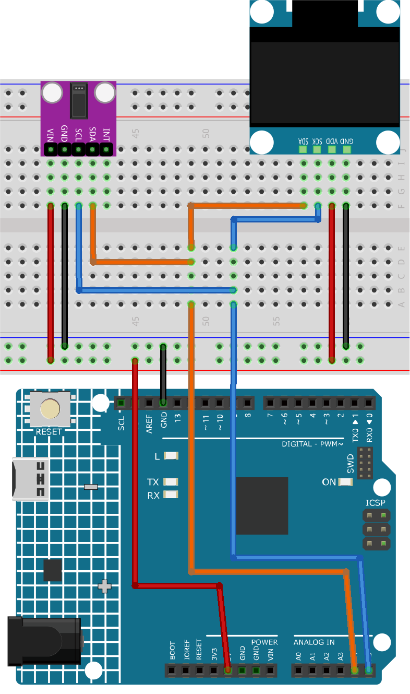

注釈
こんにちは、SunFounderのRaspberry Pi & Arduino & ESP32愛好家コミュニティへようこそ！Facebook上でRaspberry Pi、Arduino、ESP32についてもっと深く掘り下げ、他の愛好家と交流しましょう。
参加する理由は？
エキスパートサポート：コミュニティやチームの助けを借りて、販売後の問題や技術的な課題を解決します。
学び＆共有：ヒントやチュートリアルを交換してスキルを向上させましょう。
独占的なプレビュー：新製品の発表や先行プレビューに早期アクセスしましょう。
特別割引：最新製品の独占割引をお楽しみください。
祭りのプロモーションとギフト：ギフトや祝日のプロモーションに参加しましょう。
👉 私たちと一緒に探索し、創造する準備はできていますか？[ここ]をクリックして今すぐ参加しましょう！
心拍数モニター
このArduinoプロジェクトは、MAX30102パルスオキシメーターセンサーとSSD1306 OLEDディスプレイを使用してシンプルな心拍数モニターを作成することを目的としています。コードは心拍間の時間を測定することで心拍数を計測します。4回の測定を行った後、その平均を計算し、結果として得られた平均心拍数をOLEDスクリーンに表示します。センサーが指を検出しない場合、ユーザーにセンサー上で指を正確に配置するよう促します。
1. 回路の組み立て


2. コード
ultimate-sensor-kit\fun_project\06-Heart_rate_monitorのパスの下で06-Heart_rate_monitor.inoファイルを開くか、このコードを Arduino IDE にコピーペーストしてください。注釈
ライブラリをインストールするには、Arduinoライブラリマネージャーで "SparkFun MAX3010x" と検索し、インストールしてください。
3. コードの解説
このプロジェクトの主要な原理は、MAX30102センサーを使用して指先の血流の脈動をキャプチャすることです。血液が体内を流れると、指先の血管内の血液量が微量に変化します。このセンサーは指を透過して光を照射し、吸収または反射された光の量を測定することで、これらの微量な容量変化を検出します。次に、連続する脈動の間隔を使用して、1分あたりの心拍数（BPM）を計算します。この値は4回の測定で平均化され、OLEDスクリーンに表示されます。
ライブラリのインクルードと初期宣言:
コードは、OLEDディスプレイ、MAX30102センサー、および心拍数計算に必要なライブラリを含むように始まります。さらに、OLEDディスプレイの設定と心拍数計算の変数が宣言されます。
注釈
ライブラリをインストールするには、Arduinoライブラリマネージャーで "SparkFun MAX3010x" と検索し、インストールしてください。
#include <Adafruit_GFX.h> // OLED libraries #include <Adafruit_SSD1306.h> #include <Wire.h> #include "MAX30105.h" // MAX3010x library #include "heartRate.h" // Heart rate calculating algorithm // ... Variables and OLED configuration
このプロジェクトでは、いくつかのビットマップも用意しました。
PROGMEMキーワードは、配列がArduinoマイクロコントローラーのプログラムメモリに格納されることを示しています。プログラムメモリ（PROGMEM）にデータを格納することは、RAMのスペースを多く取る可能性のある大量のデータにとって便利です。static const unsigned char PROGMEM beat1_bmp[] = {...} static const unsigned char PROGMEM beat2_bmp[] = {...}
セットアップ関数:
I2C通信を初期化し、シリアル通信を開始し、OLEDディスプレイを初期化し、MAX30102センサーを設定します。
void setup() { Wire.setClock(400000); Serial.begin(9600); display.begin(SSD1306_SWITCHCAPVCC, SCREEN_ADDRESS); // ... Rest of the setup code
メインループ:
ここに主要な機能があります。IR値がセンサーから読み取られます。指が検出された場合（IR値が50,000以上）、プログラムは心拍が感知されたかどうかを確認します。心拍が検出されると、OLED画面にBPMが表示され、心拍の間隔がBPMの計算に使用されます。それ以外の場合は、ユーザーにセンサーに指を置くように促します。
また、2つの心拍ビットマップも用意しました。これらのビットマップを切り替えることで、ダイナミックな視覚効果を実現できます。
void loop() { // Get IR value from sensor long irValue = particleSensor.getIR(); //If a finger is detected if (irValue > 50000) { // Check if a beat is detected if (checkForBeat(irValue) == true) { // Update OLED display // Calculate the BPM // Calculate the average BPM //Print the IR value, current BPM value, and average BPM value to the serial monitor // Update OLED display } } else { // ... Prompt to place the finger on the sensor } }